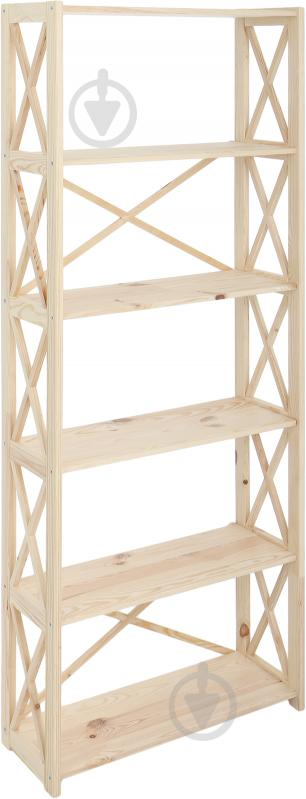
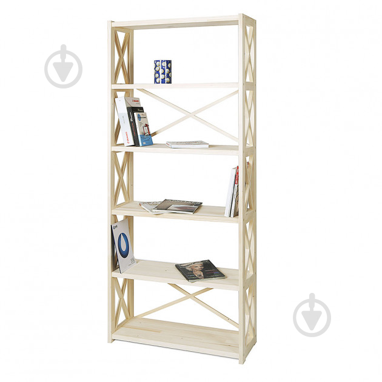

В наявності
 ціна
2 286.40 грн
Опис
Дерев'яний стелаж на 6 полиць це універсальний предмет меблів, який повинен бути в кожному будинку і офісі. Його практичний функціонал в сумісності з loft-дизайном чудово підійде в будь-який інтер'єр. Максимальне навантаження на полицю становить 30 кг, так що Ви зможете зберігати на ньому книги / документи, квіти та інше. Ще одна корисна функція - стелаж з легкістю можна зібрати і розібрати назад, що дуже корисно при переїзді. Важливо, що матеріал виготовлення - екологічно чистий масив хвойних порід (сосна, ялина). Стелаж поставляється в розібраному вигляді, що зменшує вартість доставки, в комплекті йде все необхідне для збірки за інструкцією (додається)
Характеристики
- Конструкція:.............................з полицями
- Тип установки:.........................пристінний, підлоговий
- Особливості конструкції:.....навантаження на полицю 30 кг
- Особливості конструкції:.....навантаження на полицю 30 кг
- Стиль:.........................................лофт
- Покриття каркаса:..................без покриття